layout: true .top-line[] --- class: center, middle # 커스텀 뷰 --- ## 커스텀 뷰 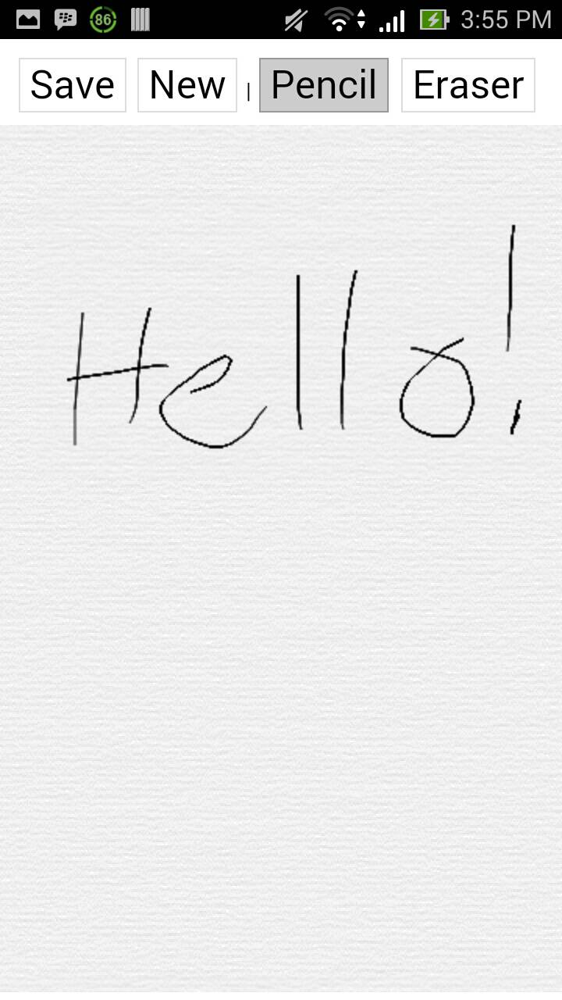 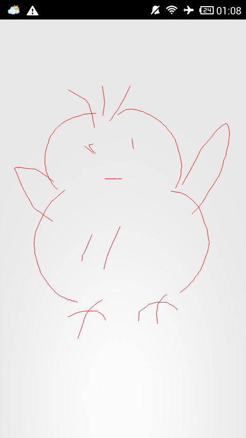 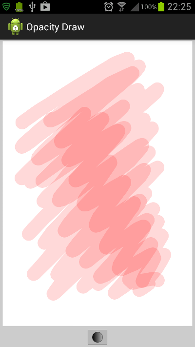 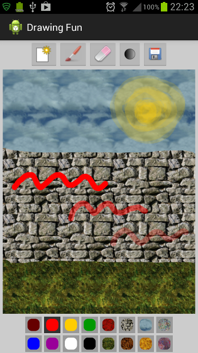 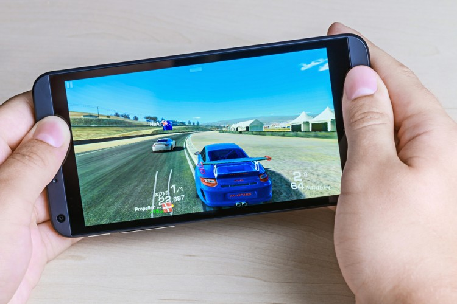 --- ## 뷰의 계층도 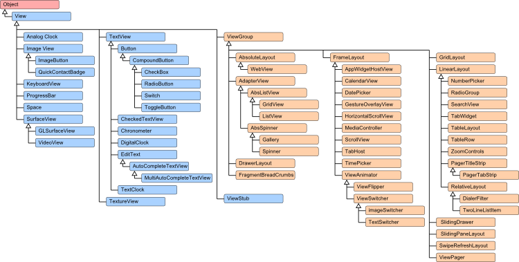 --- ## 커스텀 뷰 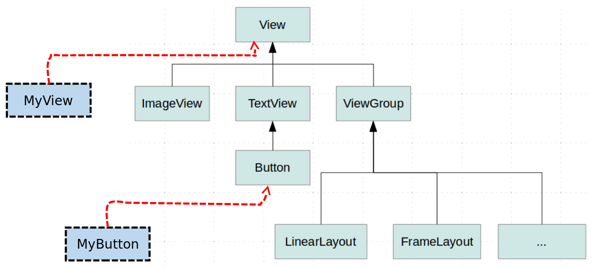 --- ## 커스텀 뷰 * View를 상속받는 클래스 만들기 * 주요 override 함수 작성하기 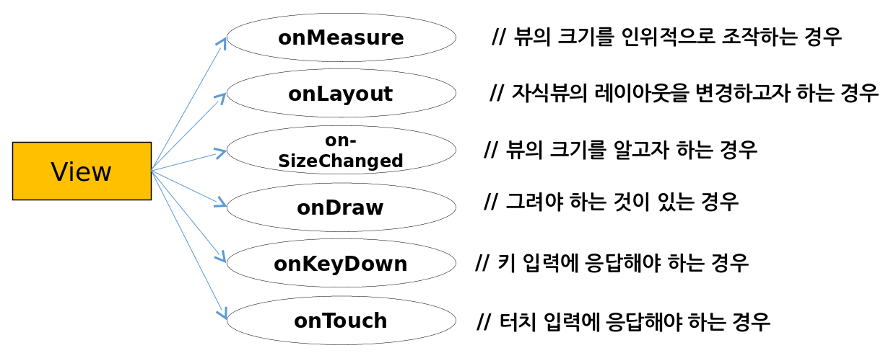 --- ## onDraw ```java public class MyView extends View { Rect rect = new Rect(10, 10, 110, 110); int color = Color.BLUE; Paint paint = new Paint(); public MyView(Context context) { super(context); } @Override protected void onDraw(Canvas canvas) { super.onDraw(canvas); paint.setColor(color); canvas.drawRect(rect, paint); } } ``` ```java public class MainActivity extends AppCompatActivity { @Override protected void onCreate(Bundle savedInstanceState) { super.onCreate(savedInstanceState); //setContentView(R.layout.activity_main); * setContentView(new MyView(this)); } } ``` 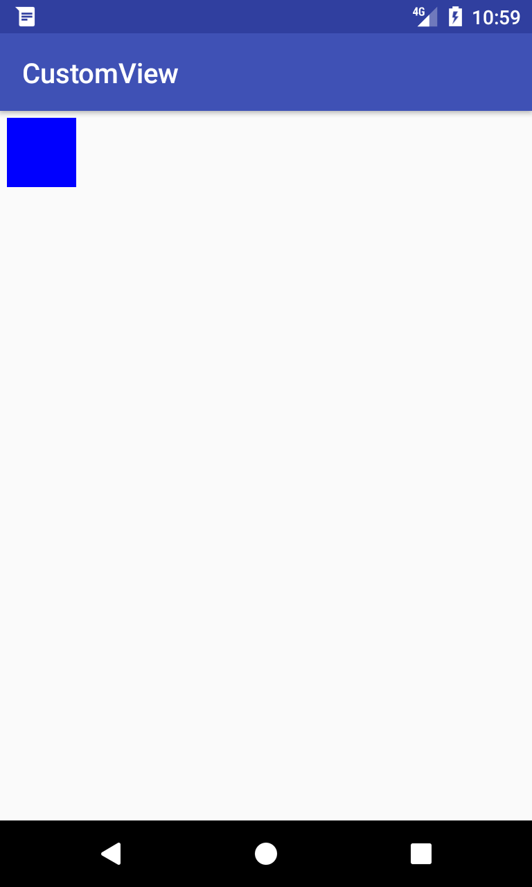 .footnote[https://github.com/jyheo/AndroidTutorial/blob/master/CustomView/app/src/main/java/com/example/jyheo/customview/MyView.java] --- ## onDraw, invalidate 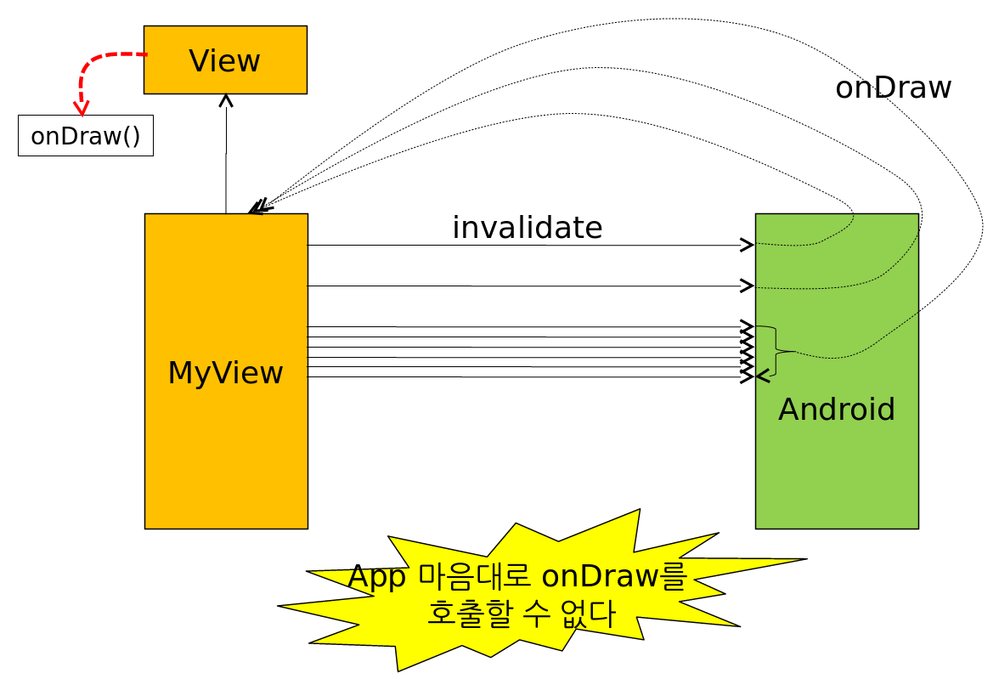 --- ## onDraw, onTouch, invalidate ```java public class MyView extends View { ... 중략 ... @Override public boolean onTouchEvent(MotionEvent event) { if(event.getAction()== MotionEvent.ACTION_DOWN){ rect.left = (int)event.getX(); rect.top = (int)event.getY(); rect.right = rect.left + 100; rect.bottom = rect.top + 100; * invalidate(); } return super.onTouchEvent(event); } } ``` 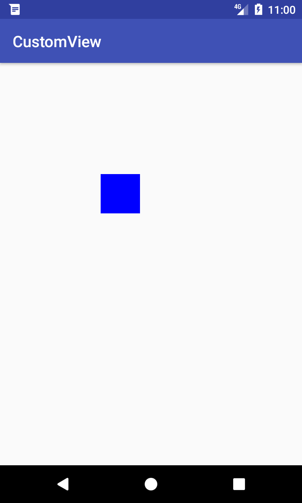 .footnote[https://github.com/jyheo/AndroidTutorial/blob/master/CustomView/app/src/main/java/com/example/jyheo/customview/MyView.java] --- ## 커스텀 뷰 + xml ```xml <?xml version="1.0" encoding="utf-8"?> <LinearLayout xmlns:android="http://schemas.android.com/apk/res/android" xmlns:tools="http://schemas.android.com/tools" android:layout_width="match_parent" android:layout_height="match_parent" android:orientation="vertical" tools:context="com.example.jyheo.customview.MainActivity"> <TextView android:layout_width="wrap_content" android:layout_height="wrap_content" android:text="Hello World!" /> * <com.example.jyheo.customview.MyView android:layout_width="match_parent" android:layout_height="match_parent" /> </LinearLayout> ``` ```java public class MainActivity extends AppCompatActivity { @Override protected void onCreate(Bundle savedInstanceState) { super.onCreate(savedInstanceState); * setContentView(R.layout.activity_main); //setContentView(new MyView(this)); } } ``` 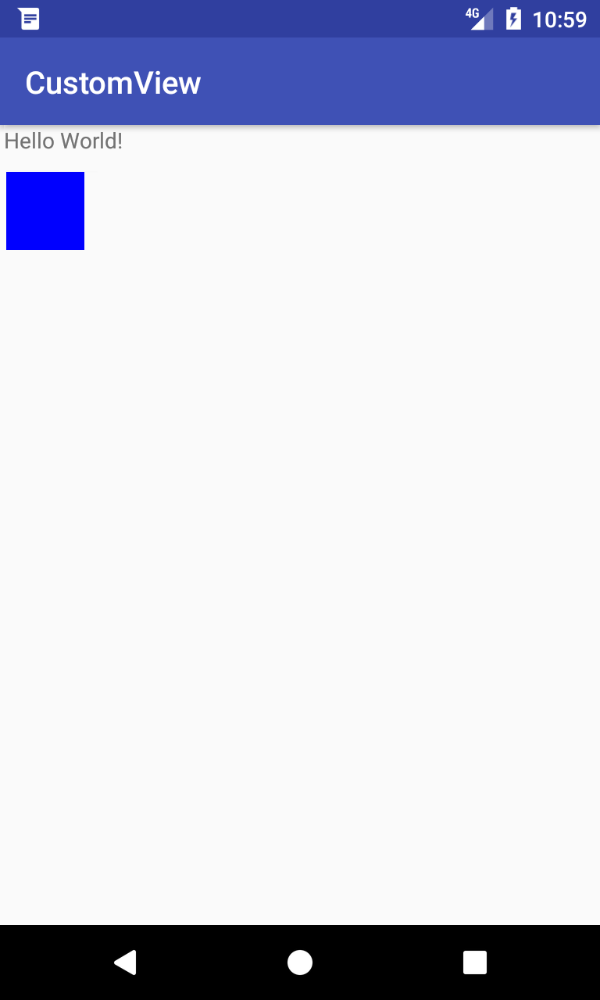 .footnote[https://github.com/jyheo/AndroidTutorial/blob/master/CustomView/app/src/main/res/layout/activity_main.xml] --- ## 커스텀 뷰 + xml + AttributeSet ```xml <?xml version="1.0" encoding="utf-8"?> <LinearLayout xmlns:android="http://schemas.android.com/apk/res/android" ... 중략 ... /> <TextView android:layout_width="wrap_content" android:layout_height="wrap_content" android:text="Hello World!" /> <com.example.jyheo.customview.MyView android:layout_width="match_parent" android:layout_height="match_parent" * mycolor="#ff0000"/> </LinearLayout> ``` ```java public class MyView extends View { Rect rect = new Rect(10, 10, 110, 110); int color = Color.BLUE; Paint paint = new Paint(); public MyView(Context context, AttributeSet attrs) { super(context, attrs); * color = attrs.getAttributeIntValue(null, "mycolor", Color.BLUE); } ... 하략 ... } ``` <img src="images/ondraw-red.png" style="position:absolute; top:100px; right: 50px; width: 300px;"> .footnote[https://github.com/jyheo/AndroidTutorial/blob/master/CustomView/app/src/main/res/layout/activity_main.xml<br/> https://github.com/jyheo/AndroidTutorial/blob/master/CustomView/app/src/main/java/com/example/jyheo/customview/MyView.java] --- ## 그래픽 애니메이션: 볼 애니메이션 ```java public class AnimatedView extends View { private ArrayList<Ball> arBall = new ArrayList<Ball>(); ... * public void updateAnimation() { for (int idx=0; idx<arBall.size(); idx++) { Ball B = arBall.get(idx); // 3. arBall 리스트에서 볼을 추출 * B.move(getWidth(),getHeight()); // 4. 추출된 볼을 애니메이트 } * invalidate(); // 5. 다시 onDraw() 간접 호출 (무한 반복) } protected void onDraw(Canvas canvas) { super.onDraw(canvas); // 1. arBall 리스트에 있는 모든 Ball 객체 그리기 for (int idx=0; idx<arBall.size(); idx++) { Ball B = arBall.get(idx); B.draw(canvas); } * updateAnimation(); // 2. updateAnimation 메소드 호출 } ``` **주의** 볼 애니메이션 루프와 터치 입력시 볼 생성 및 추가 작업이 *메인 스레드에서 모두 수행됨* **(뷰는 메인스레드만 접근 가능)** .footnote[https://github.com/kwanu70/AndroidExamples/blob/master/chap9/GraphicsTest/app/src/main/java/com/example/kwanwoo/graphicstest/AnimatedView.java]